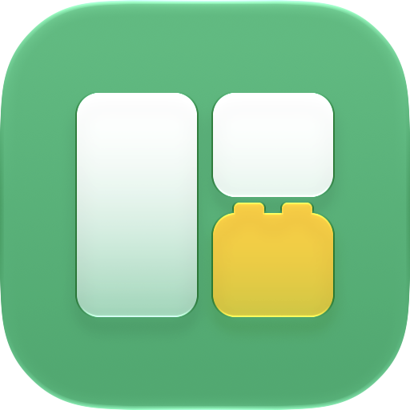

<!doctype html>
<html>
<head>
<meta charset="utf-8">
<title>winlego media</title>
<!--
  Renders the README/manual illustrations and the demo video, frame by frame.
  Driven by docs/media/capture.mjs; query parameters:
    mode=video|desk|menu   lang=en|ko   t=<seconds>
  In video/desk mode, window.render(t) draws the moment t seconds into the demo.
  The UI drawn here mirrors the real app (Sources/winlego/UI/MenuView.swift,
  Overlay/ZoneOverlay.swift, Drag/DividerResizer.swift); keep them in step.
-->
<style>
  :root {
    --font: -apple-system, BlinkMacSystemFont, "SF Pro Text", "Apple SD Gothic Neo", "Helvetica Neue", sans-serif;
    --mono: ui-monospace, "SF Mono", Menlo, monospace;
    --accent: #0a7cff;
  }
  html, body { margin: 0; background: #0b0f17; }
  #stage {
    position: relative; width: 1600px; height: 900px; overflow: hidden;
    font-family: var(--font); color: #fff;
    background: radial-gradient(1100px 620px at 50% 28%, #24423a 0%, #13201d 58%, #0b0f17 100%);
  }

  /* Display */
  .bezel { position: absolute; background: #0d0e12; border-radius: 16px;
    box-shadow: 0 34px 70px rgba(0,0,0,.5), inset 0 0 0 1px #2b2e36; }
  .screen { position: absolute; overflow: hidden; border-radius: 4px;
    background:
      radial-gradient(70% 90% at 15% 0%, rgba(140,230,190,.8), transparent 60%),
      radial-gradient(60% 80% at 95% 100%, rgba(120,170,255,.75), transparent 60%),
      linear-gradient(135deg, #1f9a68, #2f7fb8 55%, #5a6fd8); }
  .stand-neck { position: absolute; background: linear-gradient(90deg,#a9adb6,#d9dce2 50%,#a2a6af); }
  .stand-foot { position: absolute; background: linear-gradient(#d6d9df,#9fa3ab); border-radius: 6px 6px 10px 10px; }

  .menubar { position: absolute; left: 0; right: 0; top: 0; display: flex; align-items: center; z-index: 8;
    background: rgba(255,255,255,.3); backdrop-filter: blur(12px);
    color: #111; font-weight: 600; white-space: nowrap; font-size: 14px; }
  .menubar .left { display:flex; gap: 1.1em; padding-left: .9em; align-items:center; }
  .menubar .left span + span { font-weight: 500; }
  .menubar .right { margin-left: auto; display:flex; gap: .95em; padding-right: .8em; align-items:center; font-weight: 500; }
  .menubar svg { display:block; }
  .status-item { display:flex; align-items:center; justify-content:center; border-radius: 5px; padding: 2px 5px; }
  .status-item.active { background: rgba(0,0,0,.18); }

  /* Windows */
  .win { position:absolute; border-radius: 10px; overflow:hidden;
    box-shadow: 0 12px 34px rgba(0,0,0,.32), 0 0 0 .5px rgba(0,0,0,.35); }
  .win .bar { height: 30px; display:flex; align-items:center; gap: 7px; padding-left: 12px; position: relative; flex: none; }
  .win .bar i { width: 11px; height: 11px; border-radius: 50%; display:block; }
  .win .bar b { position:absolute; left: 0; right: 0; text-align:center; font-size: 13px; font-weight: 600; pointer-events:none; }
  .win.browser { background: #fff; color: #1d1d1f; }
  .win.browser .bar { background: #ececef; }
  .win.browser .url { margin: 0 auto 0 50px; height: 18px; width: 46%; border-radius: 6px; background: #fff; box-shadow: inset 0 0 0 1px #d7d8dd;
    font-size: 11px; color: #6e6e73; display:flex; align-items:center; justify-content:center; }
  .win.browser .page { padding: 18px 22px; }
  .win.browser .hero { height: 96px; border-radius: 10px; background: linear-gradient(120deg, #2fbf8a, #3a86e8); }
  .win.browser .ln { height: 9px; border-radius: 5px; background: #e1e3e8; margin-top: 12px; }
  .win.browser .cards { display:flex; gap: 12px; margin-top: 16px; }
  .win.browser .cards div { flex: 1; height: 70px; border-radius: 8px; background: #f0f1f4; }
  .win.term { background: #1c1d22; color: #d7dae0; }
  .win.term .bar { background: #2a2b31; color: #b8bbc4; }
  .win.term pre { margin: 0; padding: 12px 14px; font: 13px/1.55 var(--mono); white-space: pre; }
  .win.term .ok { color: #4fd08a; } .win.term .dim { color: #7d818c; } .win.term .p { color: #6cb6ff; }

  /* Zone overlay, like Overlay/ZoneOverlay.swift */
  .zone { position:absolute; box-sizing: border-box; border-radius: 14px; z-index: 6;
    background: rgba(255,255,255,.12); border: 2px solid rgba(255,255,255,.7);
    display:flex; align-items:center; justify-content:center; }
  .zone.lit { background: rgba(10,124,255,.35); border: 4px solid var(--accent); }
  .zone span { font-size: 26px; font-weight: 600; padding: 8px 14px; border-radius: 999px; background: rgba(0,0,0,.45); color: rgba(255,255,255,.85); }
  .zone.lit span { color: #fff; }

  /* Boundary handle, like DividerResizer's HandlePanel */
  .handle { position:absolute; z-index: 7; width: 14px; margin-left: -7px; }
  .handle .rail { position:absolute; left: 4px; width: 6px; top: 4px; bottom: 4px; border-radius: 3px; background: var(--accent); box-shadow: 0 0 0 1.5px rgba(255,255,255,.9); }
  .handle .grip { position:absolute; left: 2px; width: 10px; height: 56px; top: 50%; margin-top: -28px; border-radius: 5px; background: #fff; box-shadow: 0 1px 4px rgba(0,0,0,.35); }

  /* "Save this layout?" prompt */
  .prompt { position:absolute; z-index: 9; width: 300px; height: 76px; border-radius: 12px; overflow:hidden; color:#1d1d1f;
    background: rgba(240,241,244,.9); backdrop-filter: blur(24px) saturate(1.6);
    box-shadow: 0 16px 40px rgba(0,0,0,.35), 0 0 0 .5px rgba(0,0,0,.25); }
  .prompt .q { position:absolute; left: 16px; top: 12px; font-size: 13px; font-weight: 500; white-space: nowrap; }
  .prompt .btn { position:absolute; bottom: 12px; height: 24px; line-height: 24px; text-align:center; border-radius: 6px; font-size: 13px; }
  .prompt .later { right: 108px; width: 104px; background: #fff; box-shadow: 0 .5px 1.5px rgba(0,0,0,.3); }
  .prompt .save { right: 16px; width: 84px; background: linear-gradient(#3d8bff,#1f6ff2); color:#fff; box-shadow: 0 .5px 1.5px rgba(0,0,0,.3); }
  .prompt .save.down { background: #1659c9; }
  .prompt .count { position:absolute; left: 0; bottom: 0; height: 3px; background: rgba(10,124,255,.8); }

  #cursor { position:absolute; width: 26px; height: 26px; margin: -2px 0 0 -4px; filter: drop-shadow(0 1px 1.5px rgba(0,0,0,.45)); z-index: 30; }

  /* Menu, like the real MenuBarExtra menu */
  .menu { position:absolute; z-index: 20; padding: 5px;
    background: rgba(242,243,246,.88); backdrop-filter: blur(24px) saturate(1.6);
    border-radius: 11px; border: .5px solid rgba(0,0,0,.18);
    box-shadow: 0 18px 50px rgba(0,0,0,.35), 0 0 0 .5px rgba(255,255,255,.4) inset;
    color:#1d1d1f; font-size: 14px; }
  .menu .row { position:relative; height: 24px; display:flex; align-items:center; padding: 0 10px 0 24px; border-radius: 6px; white-space:nowrap; }
  .menu .row .check { position:absolute; left: 8px; font-size: 12px; font-weight: 700; }
  .menu .row .key { margin-left: auto; padding-left: 28px; color:#6e6e73; }
  .menu .row.dim { color:#8a8a8e; }
  .menu .row.hover { background: var(--accent); color:#fff; }
  .menu .row.hover .key { color: rgba(255,255,255,.85); }
  .menu .sep { height: 1px; background: rgba(0,0,0,.11); margin: 5px 10px; }

  /* Captions, keys, end card */
  #caption { position:absolute; left: 0; right: 0; bottom: 40px; text-align:center; z-index: 40; }
  #caption .chip { display:inline-block; font-size: 22px; font-weight: 700; letter-spacing: .02em;
    padding: 6px 16px; border-radius: 999px; background: rgba(47,191,138,.22); border: 1px solid rgba(47,191,138,.55); }
  #caption .text { margin-top: 12px; font-size: 32px; font-weight: 600; text-shadow: 0 2px 12px rgba(0,0,0,.5); }
  #keys { position:absolute; z-index: 41; left: 50%; top: 560px; transform: translateX(-50%); display:flex; gap: 14px; }
  .keycap { display:flex; gap: 10px; align-items:center; padding: 10px 20px; border-radius: 14px;
    background: linear-gradient(#fafafa,#dcdde1); color:#222; font-size: 28px; font-weight: 600;
    box-shadow: 0 6px 0 #a9abb2, 0 14px 28px rgba(0,0,0,.4); }
  .keycap small { font-size: 17px; color:#555; font-weight: 500; }
  #fade { position:absolute; inset:0; background:#0b0f17; z-index: 60; pointer-events:none; }
  #endcard { position:absolute; inset:0; z-index: 70; display:flex; flex-direction:column; align-items:center; justify-content:center;
    background: radial-gradient(900px 520px at 50% 40%, #24423a, #0b0f17 75%); text-align:center; }
  #endcard img { width: 200px; height: 200px; }
  #endcard h1 { margin: 6px 0 0; font-size: 76px; letter-spacing: -.02em; }
  #endcard p { margin: 8px 0 0; font-size: 30px; color: #c9e6da; }
  #endcard code { display:inline-block; margin-top: 34px; font: 500 25px var(--mono);
    padding: 12px 22px; border-radius: 12px; background: rgba(255,255,255,.08); border: 1px solid rgba(255,255,255,.16); color:#fff; }
  #endcard .url { margin-top: 18px; font-size: 22px; color:#8fb3a6; }
</style>
</head>
<body>
<div id="stage"></div>
<script>
const Q = new URLSearchParams(location.search);
const LANG = Q.get('lang') === 'ko' ? 'ko' : 'en';
const MODE = Q.get('mode') || 'video';
const stage = document.getElementById('stage');

const TEXT = {
  en: {
    A: ['Hold ⇧ while dragging', 'Zones appear. Drop the window, and it fills the zone.'],
    B: ['Add ⌃ to merge', 'Pass over more zones, and the window takes them all.'],
    C: ['Drag the boundary', 'Both windows resize together. Keep it as the layout if you like.'],
    D: ['It stays there', 'When an app moves its own window, winlego puts it back.'],
    zones: ['Left', 'Top Right', 'Bottom Right'],
    save: 'Save this layout for LG HDR 4K?', saveBtn: 'Save', later: n => `Not Now (${n})`,
    tagline: 'Snap windows into zones, and keep them there.',
    meta: 'Free and open source · macOS 13 or later',
    shift: 'shift', control: 'control',
  },
  ko: {
    A: ['⇧ 누른 채 드래그', '영역이 나타납니다. 놓으면 창이 영역에 꼭 맞춰집니다.'],
    B: ['⌃ 더하면 합치기', '여러 영역을 지나가면 창이 그 영역을 모두 차지합니다.'],
    C: ['경계 드래그', '두 창이 함께 크기를 바꿉니다. 마음에 들면 레이아웃으로 저장하세요.'],
    D: ['그 자리에 유지', '앱이 창을 스스로 옮겨도 winlego가 제자리로 돌려놓습니다.'],
    zones: ['왼쪽', '우상', '우하'],
    save: '이 레이아웃을 LG HDR 4K 에 저장할까요?', saveBtn: '저장', later: n => `나중에 (${n})`,
    tagline: '창을 영역에 맞춰 넣고, 그 자리에 유지하세요.',
    meta: '무료 오픈소스 · macOS 13 이상',
    shift: 'shift', control: 'control',
  },
}[LANG];

const el = (tag, cls, parent, style) => {
  const e = document.createElement(tag);
  if (cls) e.className = cls;
  if (style) Object.assign(e.style, style);
  (parent || stage).appendChild(e);
  return e;
};
const px = v => v + 'px';
const clamp01 = v => Math.max(0, Math.min(1, v));
const ease = v => { v = clamp01(v); return v < .5 ? 2 * v * v : 1 - Math.pow(-2 * v + 2, 2) / 2; };
const span = (t, a, b) => clamp01((t - a) / (b - a));
const mix = (a, b, p) => a + (b - a) * p;
const mixRect = (a, b, p) => ({ x: mix(a.x, b.x, p), y: mix(a.y, b.y, p), w: mix(a.w, b.w, p), h: mix(a.h, b.h, p) });
/** Piecewise path through [time, x, y] keys, eased between keys. */
function path(t, keys) {
  if (t <= keys[0][0]) return { x: keys[0][1], y: keys[0][2] };
  for (let i = 1; i < keys.length; i++) {
    const [t1, x1, y1] = keys[i], [t0, x0, y0] = keys[i - 1];
    if (t <= t1) { const p = ease((t - t0) / (t1 - t0)); return { x: x0 + (x1 - x0) * p, y: y0 + (y1 - y0) * p }; }
  }
  const k = keys[keys.length - 1]; return { x: k[1], y: k[2] };
}

const GRID_SVG = size => `
<svg width="${size}" height="${size}" viewBox="0 0 20 20" fill="#1d1d1f">
  <rect x="2" y="2" width="7" height="7" rx="1.8"/><rect x="11" y="2" width="7" height="7" rx="1.8"/>
  <rect x="2" y="11" width="7" height="7" rx="1.8"/><rect x="11" y="11" width="7" height="7" rx="1.8"/>
</svg>`;
const CURSOR_SVG = `
<svg viewBox="0 0 26 26" width="26" height="26">
  <path d="M5 2 L5 21 L9.6 16.8 L12.6 23.6 L15.6 22.3 L12.7 15.6 L19 15.6 Z" fill="#000" stroke="#fff" stroke-width="1.6" stroke-linejoin="round"/>
</svg>`;

// ---------------------------------------------------------------- desk scene

// One display; everything inside it is in screen-local pixels.
const SCR = { x: 300, y: 50, w: 1000, h: 562, name: 'LG HDR 4K' };
const MB = 26;                      // menu bar height
const AREA = { x: 0, y: MB, w: SCR.w, h: SCR.h - MB };
const GAP = 10;

/** A zone of the "Left + Right Stack" layout, with the left column `ratio` wide. */
function zoneRects(ratio) {
  const at = (x0, y0, x1, y1) => {
    const l = AREA.x + x0 * AREA.w + (x0 === 0 ? GAP : GAP / 2);
    const r = AREA.x + x1 * AREA.w - (x1 === 1 ? GAP : GAP / 2);
    const t = AREA.y + y0 * AREA.h + (y0 === 0 ? GAP : GAP / 2);
    const b = AREA.y + y1 * AREA.h - (y1 === 1 ? GAP : GAP / 2);
    return { x: l, y: t, w: r - l, h: b - t };
  };
  return [at(0, 0, ratio, 1), at(ratio, 0, 1, .5), at(ratio, .5, 1, 1)];
}
const union = (a, b) => {
  const x = Math.min(a.x, b.x), y = Math.min(a.y, b.y);
  return { x, y, w: Math.max(a.x + a.w, b.x + b.w) - x, h: Math.max(a.y + a.h, b.y + b.h) - y };
};
const inside = (p, r) => p.x >= r.x && p.x <= r.x + r.w && p.y >= r.y && p.y <= r.y + r.h;
const g2s = p => ({ x: p.x - SCR.x, y: p.y - SCR.y });
const s2g = p => ({ x: p.x + SCR.x, y: p.y + SCR.y });

const R0 = .6, R1 = .5;   // the boundary before and after the drag in scene C
const FLOAT = {
  browser: { x: 80, y: 70, w: 520, h: 340 },
  term: { x: 440, y: 200, w: 440, h: 270 },
  jump: { x: 520, y: 170, w: 330, h: 220 },
};

function buildDesk() {
  el('div', 'stand-neck', null, { left: px(SCR.x + SCR.w / 2 - 34), top: px(SCR.y + SCR.h + 14), width: '68px', height: '96px' });
  el('div', 'stand-foot', null, { left: px(SCR.x + SCR.w / 2 - 150), top: px(SCR.y + SCR.h + 104), width: '300px', height: '18px' });
  el('div', 'bezel', null, { left: px(SCR.x - 14), top: px(SCR.y - 14), width: px(SCR.w + 28), height: px(SCR.h + 28) });
  const screen = el('div', 'screen', null, { left: px(SCR.x), top: px(SCR.y), width: px(SCR.w), height: px(SCR.h) });

  const mb = el('div', 'menubar', screen, { height: px(MB) });
  el('div', 'left', mb).innerHTML = '<span>Safari</span><span>File</span><span>Edit</span><span>View</span><span>Window</span>';
  const right = el('div', 'right', mb);
  const status = el('span', 'status-item', right); status.innerHTML = GRID_SVG(16);
  el('span', null, right).textContent = 'Tue 9:41';

  const win = (cls, title) => {
    const w = el('div', 'win ' + cls, screen);
    const bar = el('div', 'bar', w);
    for (const c of ['#ff5f57', '#febc2e', '#28c840']) el('i', null, bar, { background: c });
    el('b', null, bar).textContent = title;
    return w;
  };
  const browser = win('browser', '');
  browser.querySelector('.bar').insertAdjacentHTML('beforeend', '<div class="url">xkorfun.github.io</div>');
  browser.insertAdjacentHTML('beforeend', `<div class="page"><div class="hero"></div>
    <div class="ln" style="width:72%"></div><div class="ln" style="width:58%"></div><div class="ln" style="width:64%"></div>
    <div class="cards"><div></div><div></div><div></div></div>
    <div class="ln" style="width:80%"></div><div class="ln" style="width:52%"></div></div>`);
  const term = win('term', 'winlego — zsh');
  term.insertAdjacentHTML('beforeend', `<pre><span class="p">~/winlego</span> % swift build -c release
<span class="dim">Building for production...</span>
[42/42] Linking winlego
<span class="ok">Build complete!</span> (27.63s)
<span class="p">~/winlego</span> % scripts/test.sh
<span class="ok">✔</span> Test run with 26 tests passed
<span class="p">~/winlego</span> % <span style="background:#d7dae0">&nbsp;</span></pre>`);

  const zones = zoneRects(R0).map((_, i) => {
    const z = el('div', 'zone', screen);
    el('span', null, z).textContent = `${i + 1}  ${TEXT.zones[i]}`;
    return z;
  });
  const handle = el('div', 'handle', screen);
  el('div', 'rail', handle); el('div', 'grip', handle);
  const prompt = el('div', 'prompt', screen);
  prompt.innerHTML = `<div class="q">${TEXT.save}</div><div class="btn later"></div><div class="btn save">${TEXT.saveBtn}</div><div class="count"></div>`;

  const cursor = el('div'); cursor.id = 'cursor'; cursor.innerHTML = CURSOR_SVG;
  return { screen, status, browser, term, zones, handle, prompt, cursor };
}

// The demo, scene by scene. Times in seconds.
const SCENES = [
  { key: 'A', from: 0, to: 6.4 },
  { key: 'B', from: 6.4, to: 13.4 },
  { key: 'C', from: 13.4, to: 21.4 },
  { key: 'D', from: 21.4, to: 26.4 },
];
const DURATION = 29.6;

/** Drags `rect` with the cursor: the window keeps the offset at which it was grabbed. */
function carried(rect, grab, cursor) {
  return { x: rect.x + cursor.x - grab.x, y: rect.y + cursor.y - grab.y, w: rect.w, h: rect.h };
}

function stateAt(t) {
  const s = { ratio: R0, browser: { ...FLOAT.browser }, term: { ...FLOAT.term }, front: 'term',
    cursor: { x: 640, y: 300 }, overlay: false, lit: [], keys: [], handle: false, prompt: null,
    fade: 0, end: 0, scene: SCENES.find(sc => t >= sc.from && t < sc.to) };
  const Z = zoneRects(R0);
  const fadeIO = (a, b) => Math.max(1 - span(t, a, a + .35), span(t, b - .45, b));
  const sc = s.scene;

  // Where the windows end up after each scene.
  const browserPlaced = t >= 3.9, termPlaced = t >= 11.2;
  if (browserPlaced) s.browser = Z[0];
  if (termPlaced) s.term = union(Z[1], Z[2]);
  if (t >= 1.4) s.front = 'browser';
  if (t >= 7.4) s.front = 'term';

  if (!sc) {
    s.ratio = R1;
    const z = zoneRects(R1); s.browser = z[0]; s.term = union(z[1], z[2]);
    s.end = ease(span(t, 26.4, 26.95));
    s.cursor = null;
    return s;
  }
  const T0 = sc.from;
  s.fade = fadeIO(T0, sc.to);

  if (sc.key === 'A') {
    const grab = { x: 300, y: 85 };                // browser title bar
    const drop = { x: 300, y: 300 };               // middle of zone 1
    const c = path(t, [[.3, 640, 360], [1.2, grab.x, grab.y], [1.9, grab.x, grab.y], [3.2, drop.x, drop.y]]);
    s.cursor = c;
    const dragging = t >= 1.4 && t < 3.9;
    if (dragging) {
      s.browser = carried(FLOAT.browser, grab, c);
      if (t >= 1.7) { s.keys = ['shift']; s.overlay = true; }
      s.lit = Z.map((z, i) => inside(c, z) ? i : -1).filter(i => i >= 0);
    }
    if (t >= 3.9) s.browser = mixRect(carried(FLOAT.browser, grab, drop), Z[0], ease(span(t, 3.9, 4.2)));
  } else if (sc.key === 'B') {
    const grab = { x: 660, y: 215 };               // terminal title bar
    const top = { x: 800, y: 160 }, bottom = { x: 800, y: 430 };
    const c = path(t, [[T0 + .3, 300, 300], [T0 + .9, grab.x, grab.y], [T0 + 1.5, grab.x, grab.y], [T0 + 2.5, top.x, top.y],
      [T0 + 3.4, top.x, top.y], [T0 + 4.3, bottom.x, bottom.y]]);
    s.cursor = c;
    const press = T0 + 1.0, release = 11.2;
    if (t >= press && t < release) {
      s.term = carried(FLOAT.term, grab, c);
      if (t >= press + .3) { s.keys = ['shift']; s.overlay = true; }
      if (t >= T0 + 2.9) s.keys = ['shift', 'control'];
      const under = Z.findIndex(z => inside(c, z));
      if (t >= T0 + 2.9) s.lit = c.y > Z[2].y ? [1, 2] : [1];
      else s.lit = under >= 0 ? [under] : [];
    }
    if (t >= release) s.term = mixRect(carried(FLOAT.term, grab, bottom), union(Z[1], Z[2]), ease(span(t, release, release + .3)));
  } else if (sc.key === 'C') {
    const line = r => AREA.x + r * AREA.w;
    const y = 300;
    const press = T0 + 1.6, release = T0 + 3.0, click = T0 + 5.2;
    const prompt = { x: line(R1) - 120, y: y + 24 };
    const saveBtn = { x: prompt.x + 300 - 16 - 42, y: prompt.y + 76 - 12 - 12 };
    const c = path(t, [[T0 + .3, 300, 380], [T0 + 1.2, line(R0), y], [press, line(R0), y], [release, line(R1), y],
      [T0 + 3.8, line(R1), y], [T0 + 4.8, saveBtn.x, saveBtn.y]]);
    s.cursor = c;
    s.ratio = t < press ? R0 : t < release ? mix(R0, R1, ease(span(t, press, release))) : R1;
    const z = zoneRects(s.ratio);
    s.browser = z[0]; s.term = union(z[1], z[2]);
    s.handle = t >= T0 + 1.15 && t < release + .1;
    if (t >= release + .15 && t < click + .25) {
      const left = 12 - Math.floor(t - release - .15);
      s.prompt = { x: prompt.x, y: prompt.y, n: left, frac: Math.max(0, 1 - (t - release - .15) / 12), down: t >= click };
    }
  } else if (sc.key === 'D') {
    const z = zoneRects(R1); s.ratio = R1;
    s.browser = z[0]; s.term = union(z[1], z[2]);
    s.cursor = { x: 300, y: 380 };
    const jump = T0 + 1.3, back = T0 + 2.4;
    if (t >= jump && t < back) s.term = mixRect(s.term, FLOAT.jump, ease(span(t, jump, jump + .15)));
    else if (t >= back) s.term = mixRect(FLOAT.jump, s.term, ease(span(t, back, back + .35)));
  }
  return s;
}

function buildOverlays() {
  const caption = el('div'); caption.id = 'caption';
  const chip = el('span', 'chip', caption);
  const text = el('div', 'text', caption);
  const keys = el('div'); keys.id = 'keys';
  const caps = {
    shift: el('div', 'keycap', keys), control: el('div', 'keycap', keys),
  };
  caps.shift.innerHTML = `⇧ <small>${TEXT.shift}</small>`;
  caps.control.innerHTML = `⌃ <small>${TEXT.control}</small>`;
  const fade = el('div'); fade.id = 'fade';
  const end = el('div'); end.id = 'endcard';
  end.innerHTML = `
    <h1>winlego</h1><p>${TEXT.tagline}</p>
    <code>brew install --cask esteban-eg-kim/tap/winlego</code>
    <div class="url">github.com/esteban-eg-kim/winlego · ${TEXT.meta}</div>`;
  return { caption, chip, text, caps, fade, end };
}

function place(node, r) { Object.assign(node.style, { left: px(r.x), top: px(r.y), width: px(r.w), height: px(r.h) }); }

function draw(s, desk, ov, withCaption) {
  place(desk.browser, s.browser);
  place(desk.term, s.term);
  desk.browser.style.zIndex = s.front === 'browser' ? 3 : 2;
  desk.term.style.zIndex = s.front === 'term' ? 3 : 2;
  const Z = zoneRects(R0);
  desk.zones.forEach((z, i) => {
    place(z, { x: Z[i].x - GAP / 2 + 6, y: Z[i].y - GAP / 2 + 6, w: Z[i].w + GAP - 12, h: Z[i].h + GAP - 12 });
    z.style.display = s.overlay ? 'flex' : 'none';
    z.classList.toggle('lit', s.lit.includes(i));
  });
  const line = AREA.x + s.ratio * AREA.w;
  desk.handle.style.display = s.handle ? 'block' : 'none';
  Object.assign(desk.handle.style, { left: px(line), top: px(AREA.y + GAP), height: px(AREA.h - 2 * GAP) });
  desk.prompt.style.display = s.prompt ? 'block' : 'none';
  if (s.prompt) {
    Object.assign(desk.prompt.style, { left: px(s.prompt.x), top: px(s.prompt.y) });
    desk.prompt.querySelector('.later').textContent = TEXT.later(s.prompt.n);
    desk.prompt.querySelector('.count').style.width = px(300 * s.prompt.frac);
    desk.prompt.querySelector('.save').classList.toggle('down', s.prompt.down);
  }
  desk.cursor.style.display = s.cursor ? 'block' : 'none';
  if (s.cursor) { const g = s2g(s.cursor); Object.assign(desk.cursor.style, { left: px(g.x), top: px(g.y) }); }
  if (ov) {
    ov.caption.style.display = withCaption && s.scene ? 'block' : 'none';
    if (s.scene) { const [chip, text] = TEXT[s.scene.key]; ov.chip.textContent = chip; ov.text.textContent = text; }
    for (const [k, cap] of Object.entries(ov.caps)) cap.style.display = withCaption && s.keys.includes(k) ? 'flex' : 'none';
    ov.fade.style.opacity = s.fade;
    ov.end.style.opacity = s.end; ov.end.style.display = s.end > 0 ? 'flex' : 'none';
  }
}

// ---------------------------------------------------------------- menu still

function buildMenu(desk) {
  const z = zoneRects(R0);
  draw({ ...stateAt(5), browser: z[0], term: union(z[1], z[2]), fade: 0, cursor: null, scene: null }, desk, null, false);
  desk.status.classList.add('active');
  const st = stage.getBoundingClientRect(), sb = desk.status.getBoundingClientRect();
  const menu = el('div', 'menu', null, { top: px(SCR.y + MB + 3) });
  const rows = [
    ['✓', 'Keep Windows in Zones'], ['sep'],
    ['', 'Move Window to', '›', 'hover'],
    ['', 'Remember This Window Here'],
    ['', 'Release This Window  ⌃⌥⌫'],
    ['', 'Arrange All by Rules  ⌃⌥↩'], ['sep'],
    ['', 'Layouts', '›'], ['', 'Rules', '›'], ['sep'],
    ['', 'Settings…', '⌘,'], ['sep'],
    ['', 'About winlego'], ['', 'Quit winlego', '⌘Q'],
  ];
  const add = (m, [check, label, key, cls]) => {
    if (check === 'sep') { el('div', 'sep', m); return null; }
    const r = el('div', 'row' + (cls ? ' ' + cls : ''), m);
    el('span', 'check', r).textContent = check;
    el('span', null, r).textContent = label;
    if (key) el('span', 'key', r).textContent = key;
    return r;
  };
  const hovered = rows.map(r => add(menu, r)).find(r => r && r.classList.contains('hover'));
  // Like macOS, keep the menu on screen.
  menu.style.left = px(Math.min(sb.left - st.left - 8, SCR.x + SCR.w - menu.offsetWidth - 6));
  // The "Move Window to" submenu, opening to the left like it does near the right edge.
  const sub = el('div', 'menu');
  const subRows = [
    ['', 'LG HDR 4K', '›', 'hover'], ['', 'WIMAXIT', '›'], ['', 'LG UltraFine', '›'], ['sep'],
    ['', 'Previous / Next Zone  ⌃⌥← ⌃⌥→', '', 'dim'], ['', 'Previous / Next Display  ⌃⌥↑ ⌃⌥↓', '', 'dim'],
  ];
  const subHover = subRows.map(r => add(sub, r)).find(r => r && r.classList.contains('hover'));
  const zonesMenu = el('div', 'menu');
  TEXT.zones.forEach((name, i) => add(zonesMenu, ['', `${i + 1}  ${name}`, '', i === 0 ? 'hover' : '']));
  const mb = menu.getBoundingClientRect(), hb = hovered.getBoundingClientRect();
  sub.style.left = px(mb.left - st.left - sub.offsetWidth + 4);
  sub.style.top = px(hb.top - st.top - 5);
  const sb2 = sub.getBoundingClientRect(), shb = subHover.getBoundingClientRect();
  zonesMenu.style.left = px(sb2.left - st.left - zonesMenu.offsetWidth + 4);
  zonesMenu.style.top = px(shb.top - st.top - 5);
  const zb = zonesMenu.getBoundingClientRect();
  const firstZone = zonesMenu.querySelector('.row').getBoundingClientRect();
  desk.cursor.style.display = 'block';
  Object.assign(desk.cursor.style, { left: px(firstZone.left - st.left + 70), top: px(firstZone.top - st.top + 12) });
  const top = SCR.y, bottom = Math.max(mb.bottom, sb2.bottom, zb.bottom) - st.top + 24;
  window.clip = { x: zb.left - st.left - 40, y: top, width: SCR.x + SCR.w - (zb.left - st.left - 40), height: bottom - top };
}

// ---------------------------------------------------------------- boot

window.ready = false;
document.fonts.ready.then(() => {
  const desk = buildDesk();
  if (MODE === 'menu') buildMenu(desk);
  else {
    const ov = buildOverlays();
    window.DURATION = DURATION;
    window.render = (t, caption = MODE === 'video') => draw(stateAt(t), desk, ov, caption);
    window.render(Number(Q.get('t') || 0));
    window.clip = { x: SCR.x - 40, y: SCR.y - 30, width: SCR.w + 80, height: SCR.h + 60 };
  }
  const imgs = [...document.images];
  Promise.all(imgs.map(i => i.complete ? 0 : new Promise(r => { i.onload = i.onerror = r; }))).then(() => { window.ready = true; });
});
</script>
</body>
</html>
